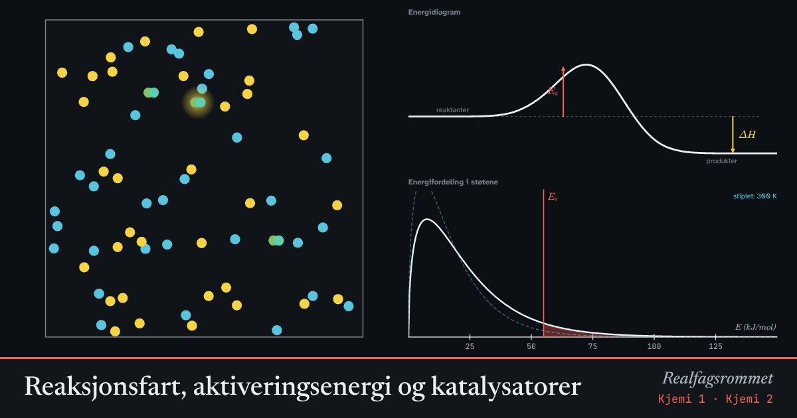

Reaksjonsfart, aktiveringsenergi og katalysatorer
Molekyler reagerer bare når de kolliderer hardt nok. Høyere temperatur gir flere harde støt. En katalysator senker energibarrieren, slik at flere støt fører til reaksjon.
Start animasjonen
Formler
Om animasjonen
Blå og gule partikler kan reagere og danne grønne. Bare en liten del av støtene har nok energi. Den andelen er det skraverte området under fordelingskurven nederst.
Øker du temperaturen, flytter fordelingen seg mot høyere energi, og andelen over vokser mye. Derfor går de fleste reaksjoner mye fortere når det blir varmere.
En katalysator gir en annen reaksjonsvei med lavere aktiveringsenergi (stiplet). Den brukes ikke opp og endrer ikke .
Energidiagrammet viser entalpien til reaktanter og produkter. Ved eksoterme reaksjoner frigjøres energi.
Prøv dette
- Hvordan endrer reaksjonsfarten seg når temperaturen øker fra 300 K til 400 K?
- Hvorfor oppbevarer vi mat i kjøleskap?
- Slå på katalysatoren. Hva skjer med ΔH? Og med farten?
- Gi tre eksempler på katalysatorer i hverdagen eller i kroppen.
Kompetansemål
- Kjemi 1: Entalpi og energidiagrammer
- Kjemi 1: Kollisjonsteori, reaksjonsfart og likevekt
- Kjemi 2: Katalyserte reaksjoner og enzymer